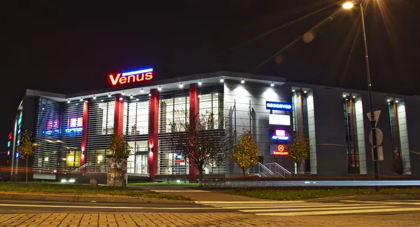

Agnieszka Rossa
Architekt w AMR Architekci & Partnerzy. Malarka i ceramiczka.
„Moją pasją jest malarstwo olejne, akrylowe i akwarelowe oraz ceramika. Zapraszam do obejrzenia i zakupu moich prac.”
Prace

Architekt w rodzinnej pracowni
Z mężem, Mirosławem Rossą, i córką prowadzi pracownię AMR Architekci & Partnerzy w Lublinie. Współtworzyła m.in. Galerię Venus 1 w Świdniku i projekt Galerii Zana w Lublinie.
O pracowni